Ce sont des missions qui transportent des humains vers l'espace pour conduire des recherches scientifiques, maintenance de satellites entre autres activités. Ces missions sont
plus complexes par rapport aux missions 100% robotiques, car elles demande une planification minucieuse pour assurer le support de vie et la securité des astronautes. Jusqu'à présent, les
humains ne sont pas encore allés au-délà du système Terre-Lune, meme si des planifications existent pour des vols vers Mars et meme d'autres systèmes solaires. Ici sont quelques
programmes de vols habitées du passé et du présent, divisés par pays et type:
Etats-Unis
Mercury
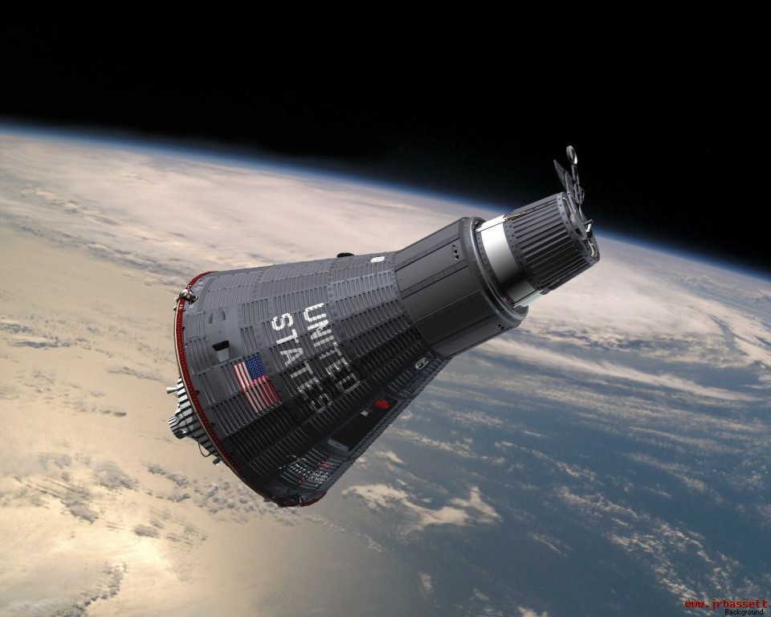
Gemini
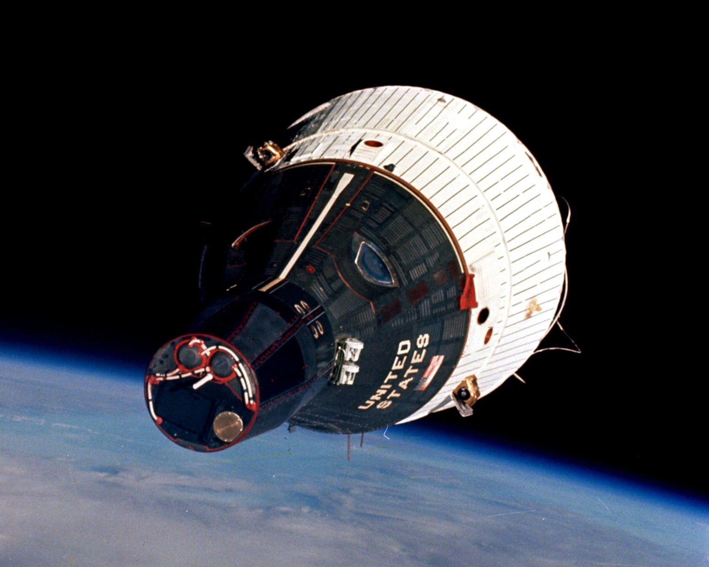
Apollo
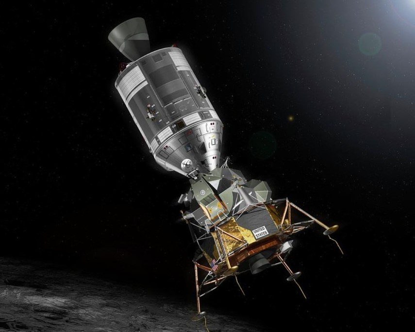
Space Shuttle
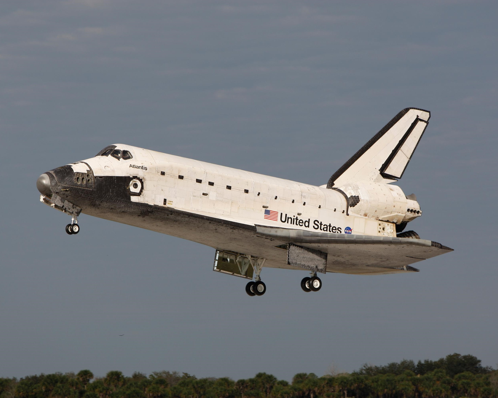
Crew Dragon
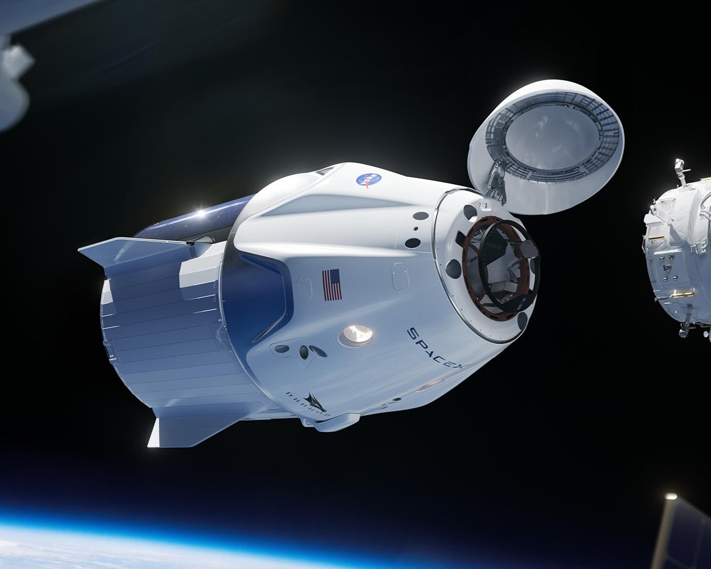
Starliner
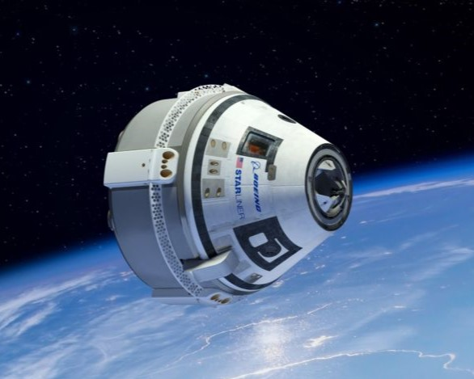
Russie
Vostok
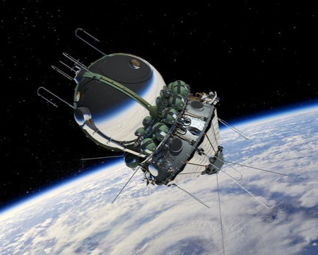
Voskhod
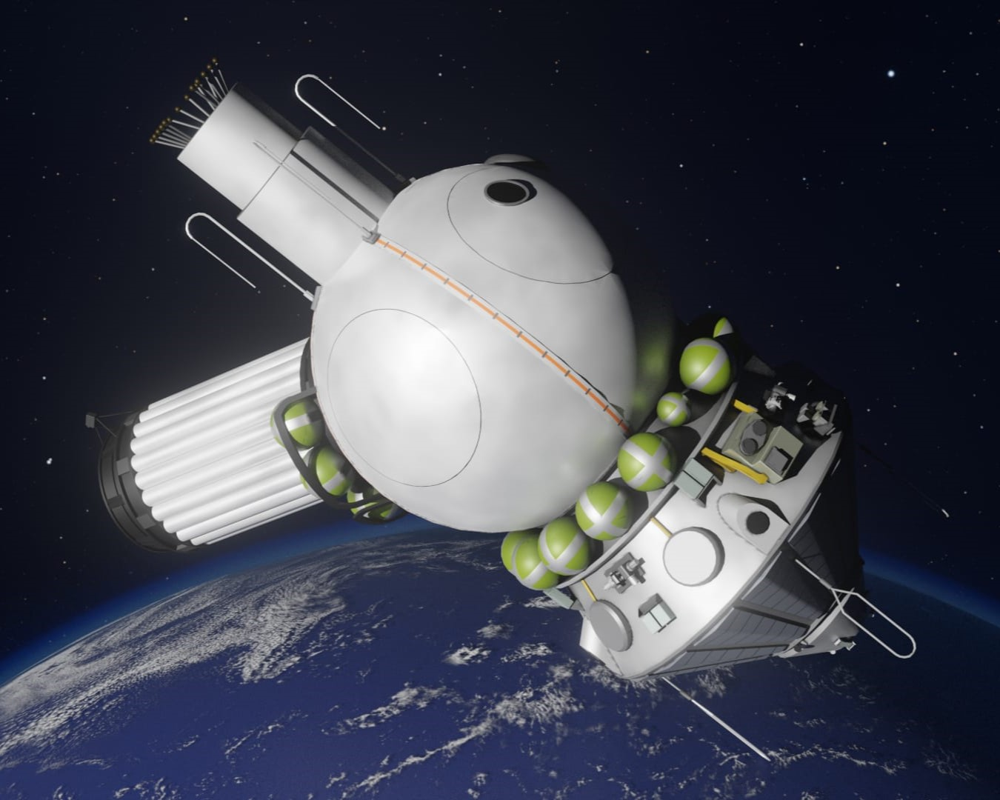
Soyuz
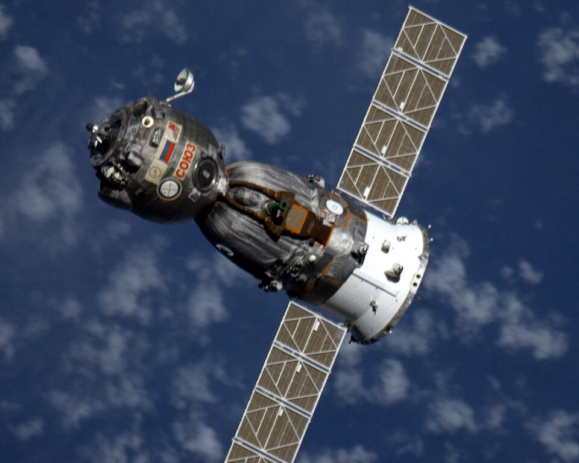
Chine
Shenzhou
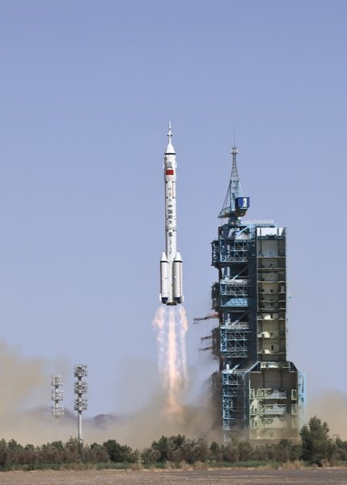
Les Stations Spatiales
Salyut
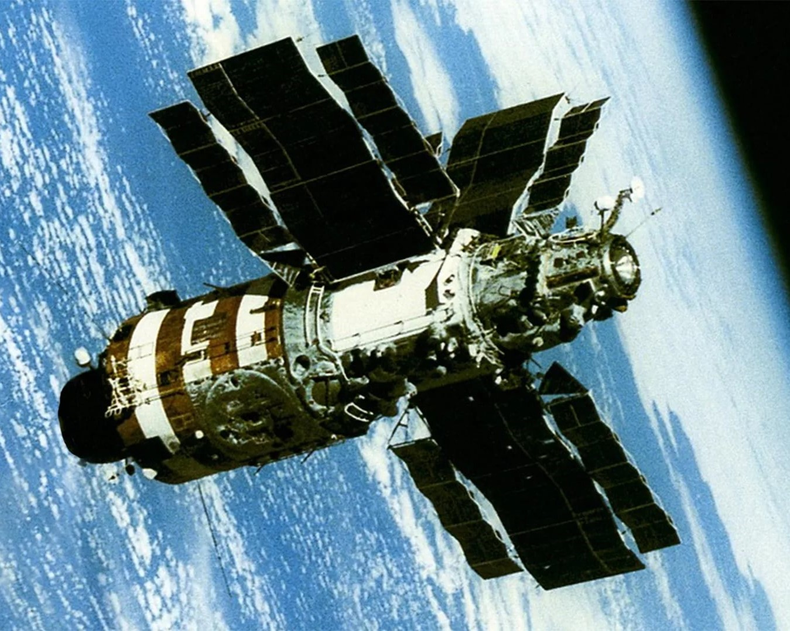
Mir
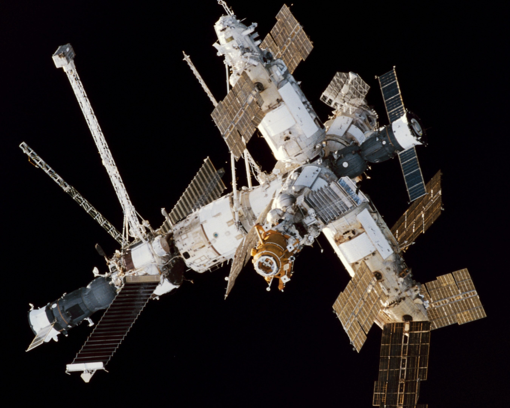
Skylab
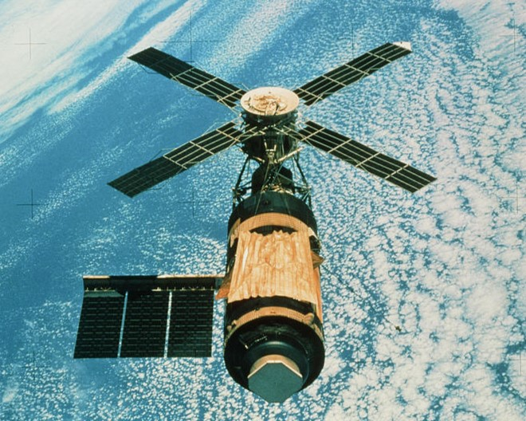
ISS
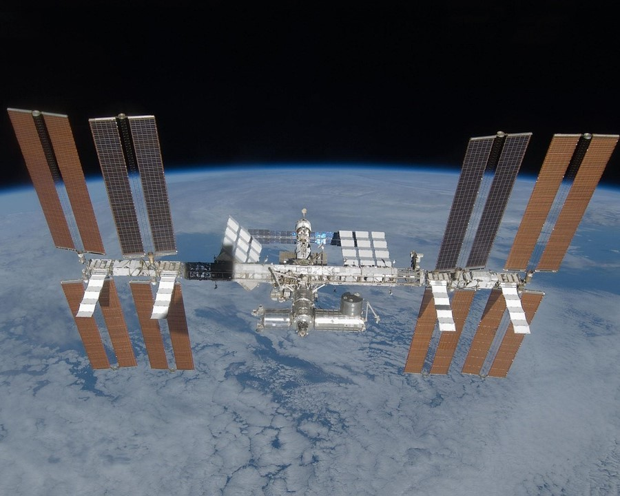
Tiangong
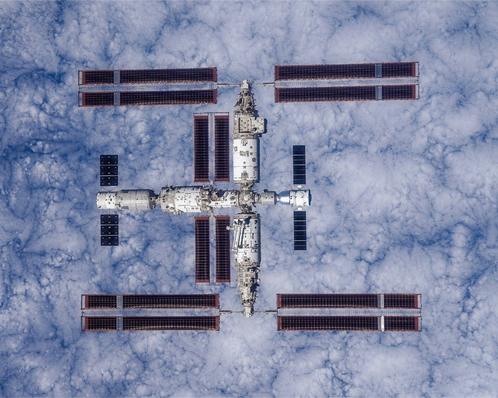